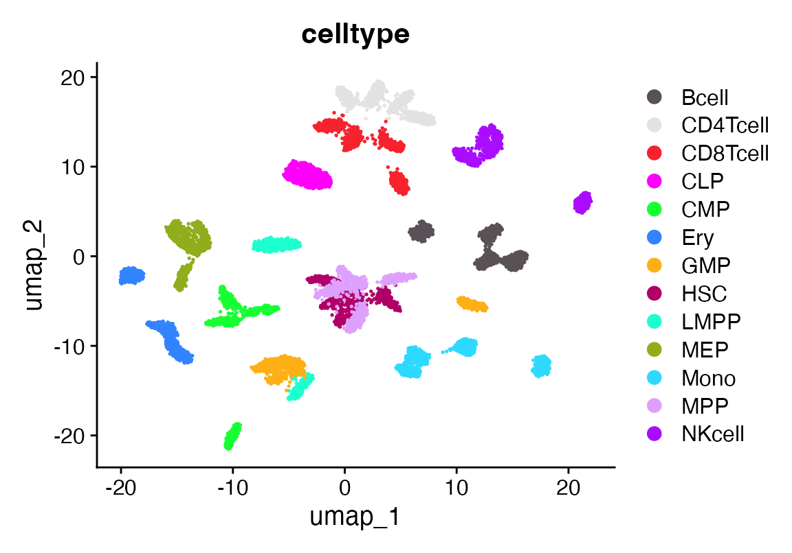
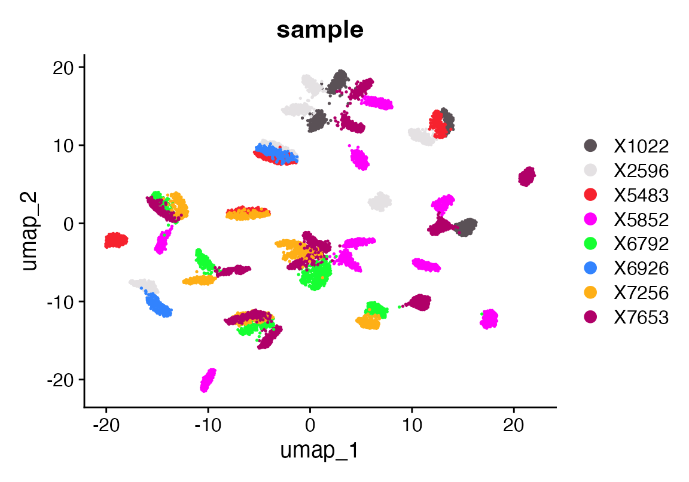
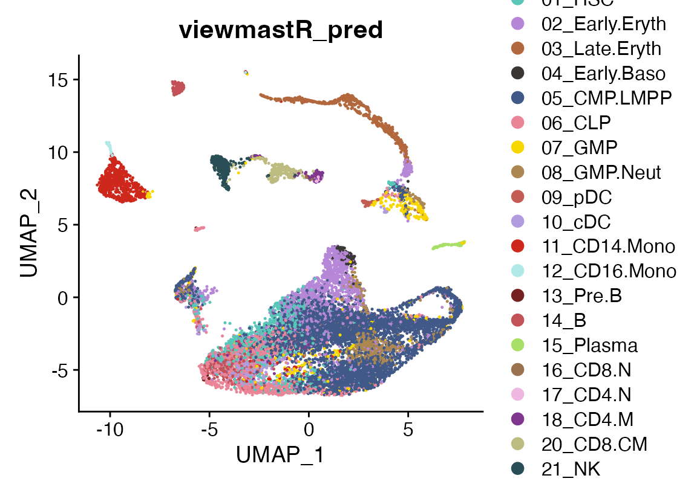
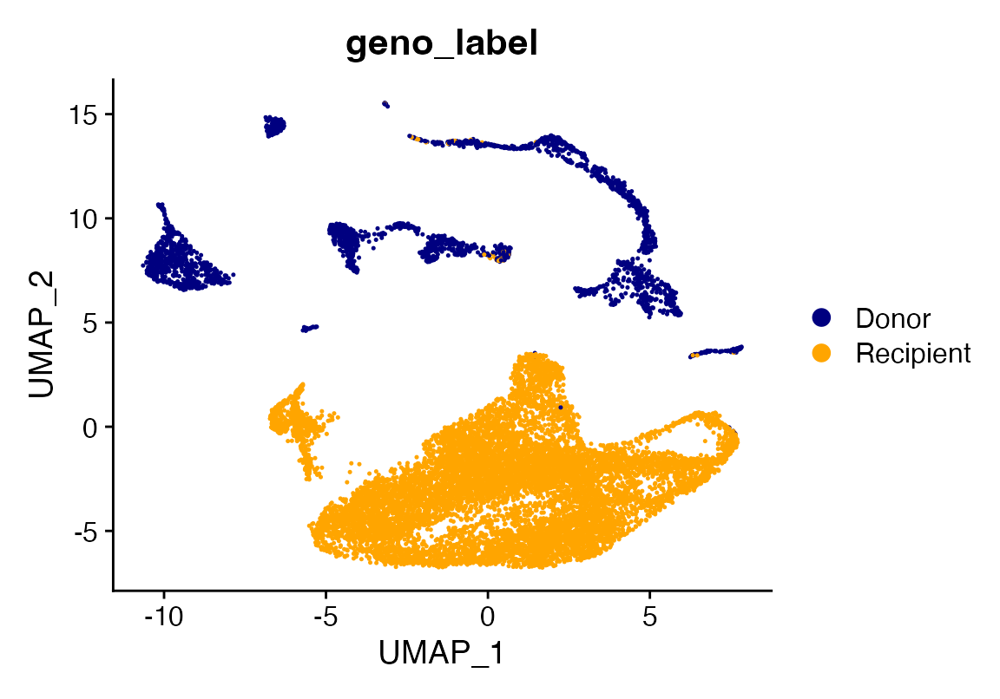
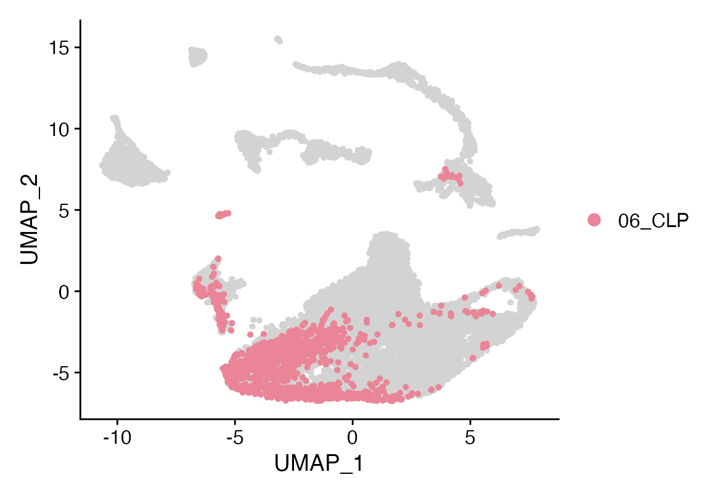
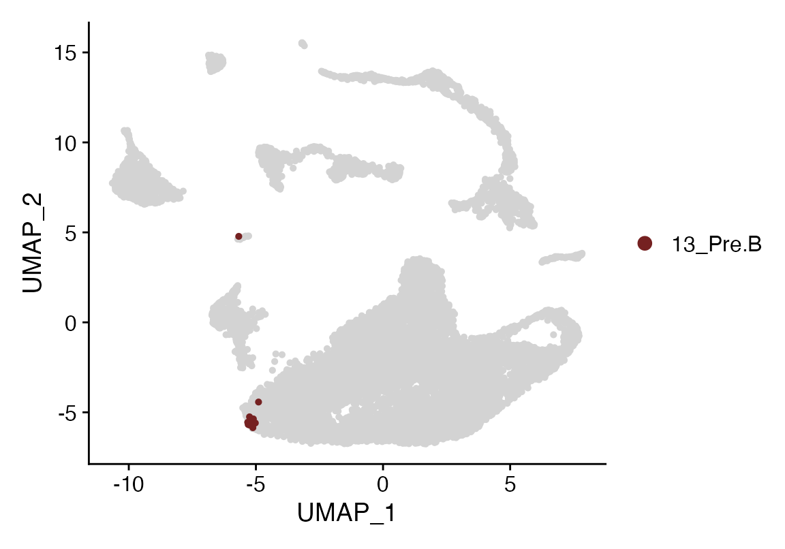
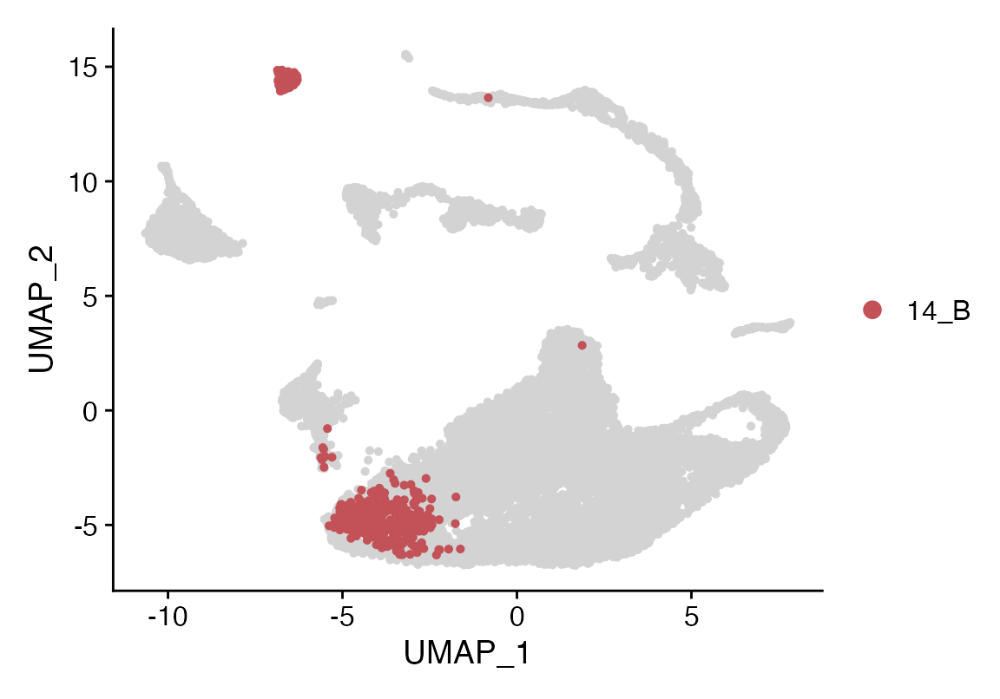
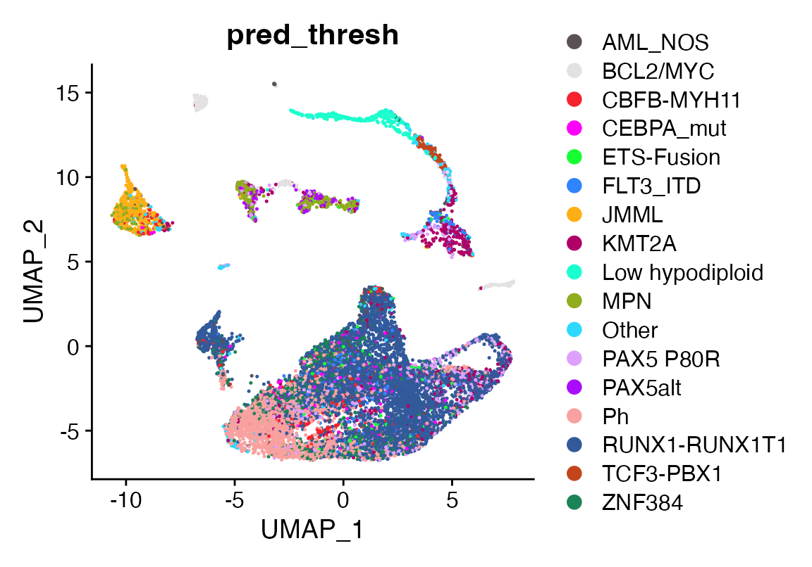

How to use a bulk dataset as a reference for viewmastR
2024-01-26
BulkReference.RmdInstalling Rust
First you need to have an updated Rust installation. Go to this site to learn how to install Rust.
Installing viewmastR
You will need to have the devtools package installed…
devtools::install_github("furlan-lab/viewmastR")Load a few datasets
suppressPackageStartupMessages({
library(viewmastR)
library(Seurat)
library(SeuratObject)
library(ggplot2)
library(scCustomize)
library(magrittr)
library(SummarizedExperiment)
})
#malignant ref (bulk)
seuMR<-readRDS(file.path(ROOT_DIR1, "240126_AML_object.RDS"))
seMR<-readRDS(file.path(ROOT_DIR1, "240126_Combined_SE_Object.RDS"))
#healthy ref (sc)
seuHR <- readRDS(file.path(ROOT_DIR3, "230329_rnaAugmented_seurat.RDS"))
#query dataset
seuP<-readRDS(file.path(ROOT_DIR2, "220831_ptdata.RDS"))Make a bulk classifier
We can then see how this classifies cells from a scRNAseq experiment. This is first done by loading the data and creating a [Summarized Experiment] (https://bioconductor.org/packages/release/bioc/html/SummarizedExperiment.html). We remove a few malignant/modified cells from the reference. The function “splat_bulk_reference” takes a SummarizedExperiment and returns a Seurat object made by generating pseudo-single-cell data which can then be used as a reference for viewmastR. We invoke viewmastR. Although it is not necessary, we can then visualize a UMAP of the single-cellified bulk reference using a standard Seurat workflow. Finally, we can visualize the bulk viewmastR classification result compared to the published cell labels. While, we see fairly faithful overlap, the bulk reference does not contain samples for all the celltypes, so cells such as plasma cells and cDCs are called other celltypes.
dat<-read.table(allcounts, header = T)
rownames(dat)<-dat$X_TranscriptID
dat$X_TranscriptID<-NULL
metad<-data.frame(sample = strsplit(colnames(dat), "\\.") %>% sapply("[[", 1), celltype = strsplit(colnames(dat), "\\.") %>% sapply("[[", 2))
rowd<-DataFrame(gene_short_name = rownames(dat), row.names = rownames(dat))
obj<-SummarizedExperiment::SummarizedExperiment(assays = list(counts=dat), rowData = rowd, colData = metad)
#remove samples we don't want
obj<-obj[,!grepl("^Blast", obj$celltype)] #blasts
obj<-obj[,!grepl("^rHSC", obj$celltype)] #recombinant HSCs
obj<-obj[,!grepl("^LSC", obj$celltype)] #leukemia stem cells
#obj<-obj[,obj$sample %in% c("X5852", "X5483")] #two donors
#undebug(splat_bulk_reference)
seuF<-splat_bulk_reference(seuHR, obj, N=200)
seuF<-NormalizeData(seuF)
seuF <- FindVariableFeatures(seuF, nfeatures = 1000, assay = "RNA")
seuF <- ScaleData(seuF) %>% RunPCA(features = VariableFeatures(object = seuF), npcs = 100)
ElbowPlot(seuF, 100)
seuF<- FindNeighbors(seuF, dims = 1:20)
seuF <- FindClusters(seuF, resolution = 1.1)## Modularity Optimizer version 1.3.0 by Ludo Waltman and Nees Jan van Eck
##
## Number of nodes: 9800
## Number of edges: 364143
##
## Running Louvain algorithm...
## Maximum modularity in 10 random starts: 0.9502
## Number of communities: 33
## Elapsed time: 0 seconds
seuF <- RunUMAP(seuF, dims = 1:20, n.components = 2, min.dist = 0.6)
DimPlot(seuF, group.by = "celltype", cols = as.character(pals::polychrome(20)))
DimPlot(seuF, group.by = "sample", cols = as.character(pals::polychrome(20)))
seuF<-calculate_gene_dispersion(seuF)
seuF<-select_genes(seuF, top_n = 10000, logmean_ul = -1, logmean_ll = -8)
vgr<-get_selected_genes(seuF)
seuHR<-calculate_gene_dispersion(seuHR)
seuHR<-select_genes(seuHR, top_n = 10000, logmean_ul = -1, logmean_ll = -8)
vgq<-get_selected_genes(seuHR)
vg<-intersect(vgq, vgr)
seuHR<-viewmastR::viewmastR(query_cds = seuHR, ref_cds = seuF, ref_celldata_col = "celltype", selected_genes = vg)
cols<-c(seuHR@misc$colors[c(14,18,20,6,5,3,7,1,5,2,11)], "cyan", seuHR@misc$colors[c(21)])
names(cols)<-levels(factor(seuF$celltype))
DimPlot_scCustom(seuHR, group.by = "viewmastR_pred", colors_use = cols, label = T, repel = T, label.box = T, label.color = "white")
DimPlot_scCustom(seuHR, group.by = "SFClassification", colors_use = seuHR@misc$colors, label = T, repel = T, label.box = T, label.color = "white")Let’s look at a patient
This patient is post transplant with evidence of chimerism. Let’s run viewmastR using a reference of healthy BM on the cells to see how the cells annotate
seuP<-calculate_gene_dispersion(seuP)
seuP<-select_genes(seuP, top_n = 10000, logmean_ul = -1, logmean_ll = -8)
vgr<-get_selected_genes(seuP)
seuHR<-calculate_gene_dispersion(seuHR)
seuHR<-select_genes(seuHR, top_n = 10000, logmean_ul = -1, logmean_ll = -8)
vgq<-get_selected_genes(seuHR)
vg<-intersect(vgq, vgr)
seuP<-viewmastR::viewmastR(query_cds = seuP, ref_cds = seuHR, ref_celldata_col = "SFClassification", selected_genes = vg)
DimPlot_scCustom(seuP, group.by = "viewmastR_pred", colors_use = seuHR@misc$colors)
seuP$geno_label<-seuP$geno
seuP$geno_label[seuP$geno %in% "0"]<-"Donor"
seuP$geno_label[seuP$geno %in% "1"]<-"Recipient"
DimPlot_scCustom(seuP, group.by = "geno_label")
Interesting that we see some lymphoid/B signature in this patient with a RUNX1-RUNX1T1 fusion
Idents(seuP)<-seuP$viewmastR_pred
#levels(factor(as.character(seuP$viewmastR_pred)))
Cluster_Highlight_Plot(seuP, cluster_name = "06_CLP", highlight_color = seuHR@misc$colors)
Cluster_Highlight_Plot(seuP, cluster_name = "13_Pre.B", highlight_color = seuHR@misc$colors)
Cluster_Highlight_Plot(seuP, cluster_name = "14_B", highlight_color = seuHR@misc$colors)
Let’s investigate how the tumor annotates using a bulk reference of leukemia cases
First we will pare down the data into a min of 3 and a max of 20 cases per leukemia subgroup. We will make 10 cells from each case, then use the resulting reference to classify the patient sample. There seems to be a Ph signature in this case even though the majority of the tumor cells annotate correctly as RUNX1-RUNX1T1
obj<-seMR
#rowData(obj)
sttk<-names(table(obj$final_group))[table(obj$final_group)>3]
sttk<-sttk[!sttk %in% "Other"]
case_max<-20
obj<-obj[,obj$final_group %in% sttk]
ds<-names(table(obj$final_group))[table(obj$final_group)>20]
ctk<-lapply(names(table(obj$final_group)), function(type){
cases<-which(obj$final_group %in% type)
if (length(cases)>case_max){
cases<-sample(cases, case_max)
}
cases
})
obj<-obj[,unlist(ctk)[order(unlist(ctk))]]
#table(obj$final_group)
#debug(splat_bulk_reference)
seuF<-splat_bulk_reference(seuP, obj, N=10)
seuF<-NormalizeData(seuF)
seuF <- FindVariableFeatures(seuF, nfeatures = 1000, assay = "RNA")
seuF <- ScaleData(seuF) %>% RunPCA(features = VariableFeatures(object = seuF), npcs = 100)
ElbowPlot(seuF, 100)
seuF<- FindNeighbors(seuF, dims = 1:20)
seuF <- FindClusters(seuF, resolution = 1.1)## Modularity Optimizer version 1.3.0 by Ludo Waltman and Nees Jan van Eck
##
## Number of nodes: 7360
## Number of edges: 200439
##
## Running Louvain algorithm...
## Maximum modularity in 10 random starts: 0.9030
## Number of communities: 34
## Elapsed time: 0 seconds
seuF <- RunUMAP(seuF, dims = 1:20, n.components = 2, min.dist = 0.2)
seuF<-calculate_gene_dispersion(seuF)
seuF<-select_genes(seuF, top_n = 10000, logmean_ul = -1, logmean_ll = -8)
vgr<-get_selected_genes(seuF)
seuP<-calculate_gene_dispersion(seuP)
seuP<-select_genes(seuP, top_n = 10000, logmean_ul = -1, logmean_ll = -8)
vgq<-get_selected_genes(seuP)
vg<-intersect(vgq, vgr)
seuP<-viewmastR::viewmastR(query_cds = seuP, ref_cds = seuF, ref_celldata_col = "final_group", selected_genes = vg)
thresh<-100
seuP$pred_thresh<-seuP$viewmastR_pred
seuP$pred_thresh[seuP$pred_thresh %in% names(table(seuP$viewmastR_pred))[table(seuP$viewmastR_pred)<thresh]]<-"Other"
DimPlot_scCustom(seuP, group.by = "pred_thresh")
Appendix
## R version 4.4.0 (2024-04-24)
## Platform: x86_64-apple-darwin20
## Running under: macOS Ventura 13.6.7
##
## Matrix products: default
## BLAS: /Library/Frameworks/R.framework/Versions/4.4-x86_64/Resources/lib/libRblas.0.dylib
## LAPACK: /Library/Frameworks/R.framework/Versions/4.4-x86_64/Resources/lib/libRlapack.dylib; LAPACK version 3.12.0
##
## locale:
## [1] en_US.UTF-8/en_US.UTF-8/en_US.UTF-8/C/en_US.UTF-8/en_US.UTF-8
##
## time zone: America/Los_Angeles
## tzcode source: internal
##
## attached base packages:
## [1] stats4 stats graphics grDevices utils datasets methods
## [8] base
##
## other attached packages:
## [1] SummarizedExperiment_1.34.0 Biobase_2.64.0
## [3] GenomicRanges_1.56.0 GenomeInfoDb_1.40.1
## [5] IRanges_2.38.0 S4Vectors_0.42.0
## [7] BiocGenerics_0.50.0 MatrixGenerics_1.16.0
## [9] matrixStats_1.3.0 magrittr_2.0.3
## [11] scCustomize_2.1.2 ggplot2_3.5.1
## [13] Seurat_5.1.0 SeuratObject_5.0.2
## [15] sp_2.1-4 viewmastR_0.2.3
##
## loaded via a namespace (and not attached):
## [1] fs_1.6.4 spatstat.sparse_3.0-3
## [3] RcppMsgPack_0.2.3 lubridate_1.9.3
## [5] httr_1.4.7 RColorBrewer_1.1-3
## [7] doParallel_1.0.17 tools_4.4.0
## [9] sctransform_0.4.1 backports_1.5.0
## [11] utf8_1.2.4 R6_2.5.1
## [13] lazyeval_0.2.2 uwot_0.2.2
## [15] GetoptLong_1.0.5 withr_3.0.0
## [17] gridExtra_2.3 progressr_0.14.0
## [19] cli_3.6.2 textshaping_0.4.0
## [21] spatstat.explore_3.2-7 fastDummies_1.7.3
## [23] prismatic_1.1.2 labeling_0.4.3
## [25] sass_0.4.9 spatstat.data_3.0-4
## [27] ggridges_0.5.6 pbapply_1.7-2
## [29] pkgdown_2.0.9 systemfonts_1.1.0
## [31] foreign_0.8-86 R.utils_2.12.3
## [33] dichromat_2.0-0.1 parallelly_1.37.1
## [35] maps_3.4.2 pals_1.8
## [37] rstudioapi_0.16.0 generics_0.1.3
## [39] shape_1.4.6.1 ica_1.0-3
## [41] spatstat.random_3.2-3 dplyr_1.1.4
## [43] Matrix_1.7-0 ggbeeswarm_0.7.2
## [45] fansi_1.0.6 abind_1.4-5
## [47] R.methodsS3_1.8.2 lifecycle_1.0.4
## [49] yaml_2.3.8 snakecase_0.11.1
## [51] recipes_1.1.0 SparseArray_1.4.8
## [53] Rtsne_0.17 paletteer_1.6.0
## [55] grid_4.4.0 promises_1.3.0
## [57] crayon_1.5.2 miniUI_0.1.1.1
## [59] lattice_0.22-6 cowplot_1.1.3
## [61] mapproj_1.2.11 pillar_1.9.0
## [63] knitr_1.46 ComplexHeatmap_2.20.0
## [65] rjson_0.2.21 boot_1.3-30
## [67] future.apply_1.11.2 codetools_0.2-20
## [69] leiden_0.4.3.1 glue_1.7.0
## [71] data.table_1.15.4 vctrs_0.6.5
## [73] png_0.1-8 spam_2.10-0
## [75] gtable_0.3.5 rematch2_2.1.2
## [77] assertthat_0.2.1 cachem_1.1.0
## [79] gower_1.0.1 xfun_0.44
## [81] S4Arrays_1.4.1 mime_0.12
## [83] prodlim_2024.06.25 survival_3.6-4
## [85] timeDate_4041.110 SingleCellExperiment_1.26.0
## [87] iterators_1.0.14 pbmcapply_1.5.1
## [89] hardhat_1.4.0 lava_1.8.0
## [91] fitdistrplus_1.1-11 ROCR_1.0-11
## [93] ipred_0.9-15 nlme_3.1-164
## [95] RcppAnnoy_0.0.22 bslib_0.7.0
## [97] irlba_2.3.5.1 vipor_0.4.7
## [99] KernSmooth_2.23-24 rpart_4.1.23
## [101] colorspace_2.1-0 Hmisc_5.1-2
## [103] nnet_7.3-19 ggrastr_1.0.2
## [105] tidyselect_1.2.1 compiler_4.4.0
## [107] htmlTable_2.4.2 desc_1.4.3
## [109] DelayedArray_0.30.1 plotly_4.10.4
## [111] checkmate_2.3.1 scales_1.3.0
## [113] lmtest_0.9-40 stringr_1.5.1
## [115] digest_0.6.35 goftest_1.2-3
## [117] spatstat.utils_3.1-0 minqa_1.2.7
## [119] rmarkdown_2.27 XVector_0.44.0
## [121] htmltools_0.5.8.1 pkgconfig_2.0.3
## [123] base64enc_0.1-3 lme4_1.1-35.3
## [125] sparseMatrixStats_1.16.0 highr_0.10
## [127] fastmap_1.2.0 rlang_1.1.4
## [129] GlobalOptions_0.1.2 htmlwidgets_1.6.4
## [131] UCSC.utils_1.0.0 shiny_1.8.1.1
## [133] DelayedMatrixStats_1.26.0 farver_2.1.2
## [135] jquerylib_0.1.4 zoo_1.8-12
## [137] jsonlite_1.8.8 ModelMetrics_1.2.2.2
## [139] R.oo_1.26.0 Formula_1.2-5
## [141] GenomeInfoDbData_1.2.12 dotCall64_1.1-1
## [143] patchwork_1.2.0 munsell_0.5.1
## [145] Rcpp_1.0.12 reticulate_1.37.0
## [147] stringi_1.8.4 pROC_1.18.5
## [149] zlibbioc_1.50.0 MASS_7.3-60.2
## [151] plyr_1.8.9 parallel_4.4.0
## [153] listenv_0.9.1 ggrepel_0.9.5
## [155] forcats_1.0.0 deldir_2.0-4
## [157] splines_4.4.0 tensor_1.5
## [159] circlize_0.4.16 igraph_2.0.3
## [161] spatstat.geom_3.2-9 RcppHNSW_0.6.0
## [163] reshape2_1.4.4 evaluate_0.23
## [165] ggprism_1.0.5 nloptr_2.0.3
## [167] foreach_1.5.2 httpuv_1.6.15
## [169] RANN_2.6.1 tidyr_1.3.1
## [171] purrr_1.0.2 polyclip_1.10-6
## [173] future_1.33.2 clue_0.3-65
## [175] scattermore_1.2 janitor_2.2.0
## [177] xtable_1.8-4 monocle3_1.3.7
## [179] RSpectra_0.16-1 later_1.3.2
## [181] viridisLite_0.4.2 class_7.3-22
## [183] ragg_1.3.2 tibble_3.2.1
## [185] memoise_2.0.1 beeswarm_0.4.0
## [187] cluster_2.1.6 timechange_0.3.0
## [189] globals_0.16.3 caret_6.0-94
getwd()## [1] "/Users/sfurla/develop/viewmastR/vignettes"